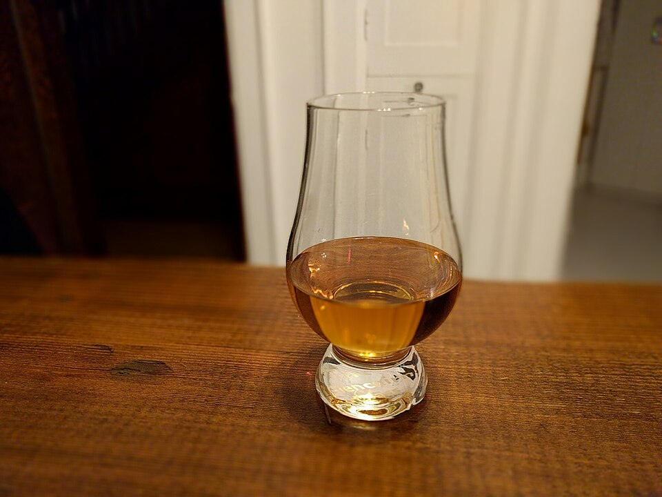

Carolina Craft Taps
We feature rotating draft handles highlighting local Charlotte brewmasters and Western North Carolina staples, offering everything from crisp lagers to hazy IPAs.
We don’t believe in eighteen-dollar cocktails with smoked rosemary garnishes. At The Sanctuary Pub, our bar program honors the working spirit of Charlotte: frosty sixteen-ounce tallboys, rotating taps from North Carolina craft independent breweries, and stiff pours of Kentucky bourbon paired with our legendary house picklebacks.

Cold beer, honest liquor, and fair prices for our community.
We feature rotating draft handles highlighting local Charlotte brewmasters and Western North Carolina staples, offering everything from crisp lagers to hazy IPAs.
No matter how much Charlotte changes, our sixteen-ounce cans of PBR, Miller High Life, and Busch Light remain ice cold and priced for everyday working folks.
Our signature shot: a generous pour of Jameson Irish Whiskey paired with a zesty chaser of our house-made garlic dill cucumber brine that cuts the alcohol heat instantly.